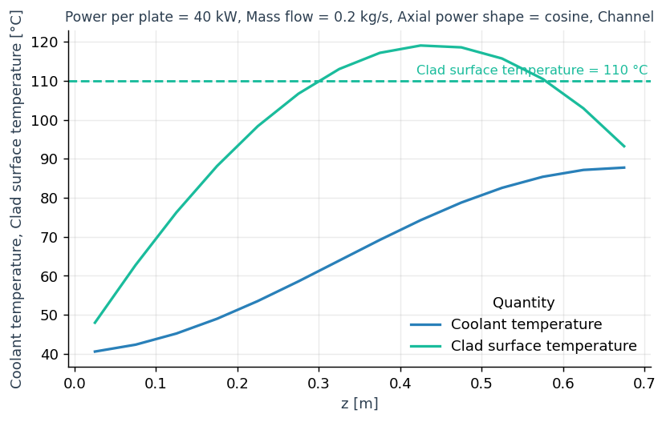
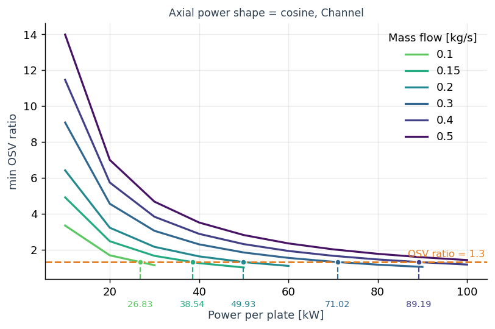
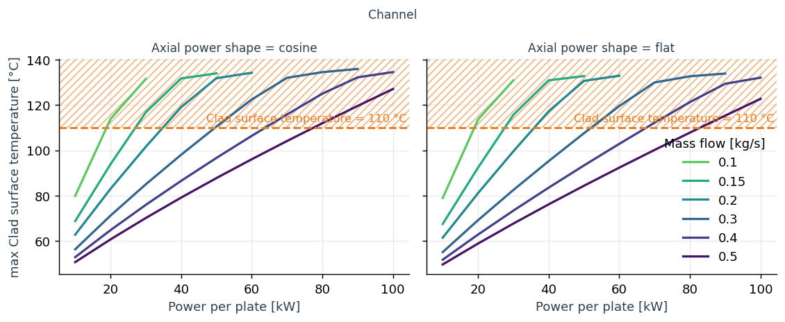
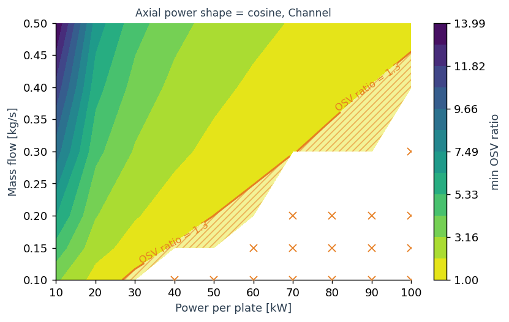
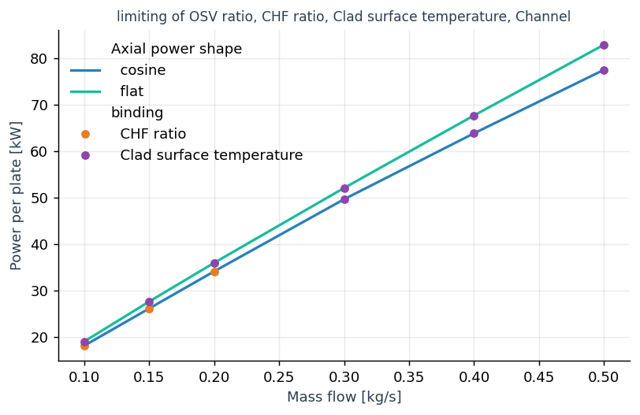

Visualization
stream.viz turns a steady-state parameter sweep into figures and tidy data.
Build a Sweep from the cases and their result frames, ask it a question, and call .plot() on the answer, or read its frame.
Each task below starts from what you want to look at and ends at the call that draws it.
The figures come from docs/viz_figures.py, a fuel plate and its coolant channel solved over ten powers, six mass flows and two axial power shapes.
Build the sweep
A sweep needs three things: the cases, one frame per case, and the aggregator the frames came from.
A frame is State.to_dataframe() of a solved case, so the model is any function that takes one case’s parameters as keywords, solves it and returns that frame.
from stream.viz import Sweep, at_least, at_most, cases, run_cases
cases_ = cases(power=[20e3, 40e3, 60e3, 80e3], mdot=[0.2, 0.3], shape=["cosine", "flat"])
frames = run_cases(model, cases_)
sweep = Sweep(cases_, frames, agr,
labels={"power": ("Power per plate", "kW", 1e-3),
"mdot": ("Mass flow", "kg/s"),
"shape": ("Axial power shape", ""),
"OSVR": ("OSV ratio", ""),
"CHFR": ("CHF ratio", ""),
"T_wall, left": ("Clad surface temperature", "°C")},
limits={"OSVR": at_least(1.3), "CHFR": at_least(1.3), "T_wall, left": at_most(110.0)})
print(sweep)
casesmakes one dict per combination of levels; a parameter can be a number or a string (a choice, such as a wall law).labels=gives each name its display text, unit and scale;"power": ("Power per plate", "kW", 1e-3)prints watts as kilowatts.limits=declares what the design must respect; a declared limit is drawn on every figure that shows its quantity.
Cases and frames from your own loop work the same way: Sweep(cases_, frames, agr) with None in the slot of a case that did not solve.
print(sweep) says what can be asked of the sweep:
Sweep: 120 cases, 34 holes (0 filled), no uncertainty
parameters: power [10000, 20000, ..., 100000], mdot [0.1, 0.15, 0.2, 0.3, 0.4, 0.5], shape [cosine, flat]
Channel: CHF (profile), CHFR (profile), ..., OSVR (profile), ..., T_cool (profile), T_in (scalar), ..., T_wall, left (profile), ...
Fuel: T (field), T_wall_left (profile), T_wall_right (profile)
limits: OSVR at least 1.3, CHFR at least 1.3, T_wall, left at most 110
holes: case 36 (power=40000, mdot=0.1, shape=cosine): scaled_newton failed at iteration 53 (Armijo line search found no descent direction); ||F||=3.906e+06.
case 37 (power=40000, mdot=0.1, shape=flat): scaled_newton failed at iteration 100 (exceeded maxit=100); ||F||=nan.
...
A profile has one value per cell along the channel, a field one value per cell over a plate’s two axes, and a scalar one value per case.
See a quantity along the channel
sweep.profile(["T_cool", "T_wall, left"], where=dict(power=40e3, mdot=0.2, shape="cosine")).plot()


where=fixes parameters at grid levels; every parameter it leaves free draws one line per level.Several quantities share one axis when they share a unit, and each gets its own colour.
plot(color="power")puts a free parameter on colour;style=andmarker=take the next ones.
For a plate, sweep.field("T", of="Fuel", where=dict(power=40e3, mdot=0.2, shape="cosine")).plot() draws one case’s temperature over both axes.
See how the worst value moves with a parameter
sweep.reduce("OSVR", "min", versus="power", where=dict(shape="cosine")).plot(color="mdot", crossing="mark")


The reducer collapses each case to one number:
"min"or"max"for the worst value; the reference below lists the others.versus=is the parameter on the x axis;plot(color="mdot")gives each mass flow its own line.plot(crossing="mark")marks where each line meets its limit and prints the value under the axis.
sweep.reduce("T_wall, left", "max", versus="power").plot(color="mdot", col="shape", show_limit="shade")


plot(col="shape")draws one panel per level;row=adds a second direction.plot(show_limit="shade")hatches the unsafe side of the limit; the default"line"draws only the dashed line.
See the worst value over two parameters
sweep.reduce("OSVR", "min", versus=("power", "mdot"), where=dict(shape="cosine")).plot(show_limit="shade")


A pair on
versus=makes a map: filled contours over the two parameters.The declared limit is a contour; with
show_limit="shade"its unsafe side is hatched.When the reducer is the limit’s own (
"min"forat_least,"max"forat_most), the limit contour is the curve of the next task.
Find how far a parameter can go
sweep.required(["OSVR", "CHFR", "T_wall, left"], solve_for="power", versus="mdot", limiting=True).plot(color="shape")


solve_for=is the parameter walked until the quantity meets its limit,versus=the parameter on the x axis.equals=replaces the declared limit with a number, a dict per quantity, or the name of another quantity.limiting=Truekeeps, at each level, only the quantity that binds; the markers say which one.
Read .frame for the numbers: one row per level with lower, value, upper and safe, the side of the crossing where the design is safe.
See the uncertainty
A model that returns its frame with uq_attach bands gives a banded sweep: the sys and stat columns become lower and upper envelopes in every answer.
from functools import partial
from stream.analysis.UQ import UQModel, Uncertainty
def banded(power, mdot, shape):
uq = UQModel(dict(power=power, mdot=mdot), partial(model, shape=shape))
return uq.uq_attach(power=Uncertainty(systematic_relative=0.02), mdot=Uncertainty(statistical_relative=0.03))
frames = run_cases(banded, cases_)
sweep = Sweep(cases_, frames, agr)
sweep.reduce("CHFR", "min", versus="power", sigma=2.0).plot(color="mdot", band="split")
band=draws"total"(the default),"split"(the systematic part darker inside the total) or"none";plot(errorbars=True)draws error bars instead.sigma=on the question is the multiple ofstatin the envelopes;sysis added as it is.plot(bound="lower")orbound="upper"draws an envelope instead of the nominal value, and a crossing or a limit contour follows it.
Handle cases that did not solve
A case whose solve failed is a hole: its frame is None, and run_cases keeps the solver’s message.
The sweep warns once with every hole, and each question warns again with the holes it skips; the map above marks them with crosses.
sweep = Sweep(cases_, frames, agr, fill_holes=True)
print(sweep.holes, sweep.filled)
fill_holes=Trueinterpolates a hole between its two solved neighbours along a numeric parameter; a hole at the edge of the sweep, or next to another hole, stays a hole.A filled case draws with an open marker and carries
filled=Truein every frame, andrequiredwarns when a crossing rests on it.sweep.holesmaps each hole to its message andsweep.filledeach filled hole to the cases it was interpolated from.
Run the cases in parallel
run_cases runs the cases one after the other.
mapper= takes any map that keeps the order of the cases, called as mapper(f, cases):
from concurrent.futures import ProcessPoolExecutor, ThreadPoolExecutor
import dask
with ThreadPoolExecutor() as pool:
frames = run_cases(model, cases_, mapper=pool.map)
with ProcessPoolExecutor() as pool:
frames = run_cases(model, cases_, mapper=pool.map)
frames = run_cases(model, cases_, mapper=lambda f, xs: dask.compute(*(dask.delayed(f)(x) for x in xs)))
A process pool pickles the model, so the model must be a function defined at module level; threads and dask take any callable.
catch=is the tuple of exceptions that make a case a hole. The default holds the three ways a STREAM solve reports that it did not finish:AlgRuntimeError,TransientRuntimeErrorandSaturationReachedError.Any other exception, a bug in the model among them, stops the run.
Change the look
import matplotlib.pyplot as plt
from stream.viz import Label, Style
sheet = Style(palette=("#1b9e77", "#d95f02", "#7570b3"), number_format=".3g", limit_color="#d62728")
sweep.reduce("CHFR", "min", versus="power").plot(style_sheet=sheet, labels={"power": Label("Power", "kW", 1e-3, ".0f")})
with sheet:
fig, ax = plt.subplots()
ax.plot(measured_z, measured_temperature)
style_sheet=onplottakes aStyle: palette, sizes, the limit’s colour and hatch, the map’s levels, and the number format of every printed value.labels=onplotoverrides the sweep’s labels for one figure. ALabelor its tuple(display, unit, scale, fmt)sets how a name prints;fmtis a format spec such as".1f"or a function of the scaled number.with sheet:makes it the sheet of everyplotcall inside the block, and applies its matplotlib settings to your own figures drawn there, so they match.
A frame with a time column is refused: the module draws steady states only.
Warning
stream.viz was written by an AI assistant, and it is a large amount of intricately interwoven code.
Reading it, changing it or fixing it will not feel like the rest of STREAM. Before a change is safe, expect
to spend real time tracing how Sweep, its questions and Result hand data to each other,
and lean on the tests in tests/test_viz.
Reference
- cases(**levels)[source]
Use this to lay out every combination of parameter levels you want solved.
The product of the given levels, one dict per case.
Each keyword is a parameter and its levels; a single number or string is a parameter with one level. The last parameter varies fastest:
cases(power=[2e6, 4e6], mdot=[0.2, 0.3], Tin=300.0)
gives four cases,
power=2e6, mdot=0.2first. Pass the list torun_cases, then the list and the frames toSweep.- Return type:
list[dict]
- run_cases(model, cases, catch=(<class 'stream.solvers.AlgRuntimeError'>, <class 'stream.solvers.TransientRuntimeError'>, <class 'stream.calculations.channel.SaturationReachedError'>), mapper=<class 'map'>)[source]
Use this when one function solves one case, to solve the whole grid in order and keep the failures as holes.
Solve every case with
model(**case)and collect the frames forSweep.frames = run_cases(model, cases_) sweep = Sweep(cases_, frames, agr)
- Parameters:
model (Callable[[...], DataFrame]) – Called as
model(**case)for every case; returns that case’sState.to_dataframe().cases (Sequence[Mapping[str, float | str]]) – One dict per case, as
casesmakes them.catch (tuple[type[BaseException], ...]) – The exceptions that make a case a hole. The default holds the three ways a STREAM solve reports that it did not finish:
AlgRuntimeErrorandTransientRuntimeErrorfromstream.solversandSaturationReachedErrorfromstream.calculations.channel. Only these become holes; any other exception, a bug in the model among them, propagates.mapper (Callable) –
How the cases are run: any map that keeps the order of the cases, called as
mapper(f, cases). The model is called in the mapper’s workers. The builtinmap(the default) runs the cases one after the other. A process pool (ProcessPoolExecutor().mapormultiprocessing.Pool.map) pickles the model, so it must be a module-level function; threads and dask take any callable:from concurrent.futures import ProcessPoolExecutor, ThreadPoolExecutor with ThreadPoolExecutor() as pool: frames = run_cases(model, cases_, mapper=pool.map) with ProcessPoolExecutor() as pool: frames = run_cases(model, cases_, mapper=pool.map) frames = run_cases(model, cases_, mapper=lambda f, xs: dask.compute(*(dask.delayed(f)(x) for x in xs)))
- Returns:
One frame per case, in the order of
cases, withNonein the slot of a hole. Itsfailuresmaps the index of each hole to the exception text, and one warning lists every failed case.- Return type:
list
Notes
Uncertainty enters through the model: a model that returns its state’s frame with
uq_attachbands (sysandstatcolumns) gives a banded sweep.
- class Sweep(cases, frames, agr, labels=None, limits=None, fill_holes=False)[source]
Use this to ask questions of steady states solved over a grid of design parameters.
Cases, result frames and the aggregator they came from.
Build one from your own loop or from
casesandrun_cases, then ask it a question,profile,field,reduce(two parameters onversusmake a map) orrequired, and call.plot()on the answer or read itsframe. What is true of the whole sweep is set here: labels, limits and whether holes are filled:cases_ = cases(power=[2e6, 4e6, 6e6], mdot=[0.2, 0.3]) frames = run_cases(model, cases_) sweep = Sweep(cases_, frames, agr, limits={"CHFR": at_least(1.3)})
Ask
print(sweep)for the parameters and their levels, the quantities of each calculation, the holes and the limits. The sweep keeps its data readable:cases,frames, the aggregatoragr, the stackedtable,holes,filled,limitsandlabels.- Parameters:
cases (Sequence[Mapping[str, float | str]]) – One dict per case, all with the same keys. A value is a number, or a string for a parameter that is a choice (a wall law, a correlation); each parameter is one or the other in every case. A choice can colour, style or panel a figure, never be an axis.
frames (Sequence[DataFrame | None]) – One
State.to_dataframe()result per case, orNonefor a case whose solve failed (a hole). The listrun_casesreturns also carries each hole’s message.agr – The aggregator, static across the sweep, used for coordinates.
labels (Labels | Mapping | None) – A
Labels, or a mapping from name to aLabelor its shorthand tuple: display names, units and scales, merged over the module defaults.limits (Mapping[str, Limit] | None) –
The limits the design must respect, one per quantity:
limits={"CHFR": at_least(1.3), "T_clad": at_most(900.0)}
A declared limit is drawn on every figure that shows the quantity, gives
requiredits target andlimiting=Trueits meaning. Quantities that share axes and one limit get one line between them.fill_holes (bool) –
Truefills a hole when, along a numeric parameter and with every other parameter equal, the grid levels immediately below and above it are solved cases; the fill interpolates linearly between the two (the mean over the parameters that bracket it). A hole that no numeric parameter brackets this way (at the edge of the sweep, or next to another hole, along every one of them) stays a hole. Filled rows carryfilled=Truein every frame, draw with an open marker (a field ends its subtitle with, interpolated) and are listed infilled. Off by default because an interpolated case is a guess.
- profile(quantity, of=None, where=None, nearest=False, sigma=1.0, uncertainty=True)[source]
Use this to see how a quantity varies along the channel in one case or a family of cases.
A profile quantity against its mesh coordinate, one line per selected case.
Asked by
where,of,nearest,sigmaanduncertainty; drawn byplot.sweep.profile("T_cool", where=dict(power=4e6, mdot=0.3)).plot() sweep.profile("T_cool", where=dict(mdot=0.3)).plot(color="power") sweep.profile(["CHFR", "OSVR"], where=dict(power=4e6, mdot=0.3)).plot(col="quantity")
- Parameters:
quantity – One name or a list of names, all of one unit, each a profile (one value per cell along one axis).
of – The calculation(s) that own the quantity, when ambiguous.
where – Parameters fixed at a grid level, as a dict; a choice parameter takes one of its strings (
where=dict(power=4e6, wall_law="regime")).nearest – Snap
wherevalues to the nearest grid level instead of raising.sigma – The multiple of
statin the envelopes;sysis added as it is.uncertainty –
Falsedrops the envelopes;lowerandupperequalvalue.
- field(quantity, of=None, where=None, nearest=False, sigma=1.0, uncertainty=True)[source]
Use this to see a quantity over both axes of a plate, such as the fuel temperature, in one case.
A field quantity of exactly one case, drawn as a colour mesh over its two axes.
Asked by
where,of,nearest,sigmaanduncertainty; drawn byplot.sweep.field("T", of="plate", where=dict(power=4e6, mdot=0.3)).plot() sweep.field("T", of="plate", where=dict(power=4e6, mdot=0.3)).plot(bound="upper", show_limit="shade")
- Parameters:
quantity – One name, a field (one value per cell over two axes).
of – The calculation(s) that own the quantity, when ambiguous.
where – Parameters fixed at a grid level, as a dict, enough to pick one case; a choice parameter takes one of its strings (
where=dict(power=4e6, wall_law="regime")).nearest – Snap
wherevalues to the nearest grid level instead of raising.sigma – The multiple of
statin the envelopes;sysis added as it is.uncertainty –
Falsedrops the envelopes;lowerandupperequalvalue.
- reduce(quantity, reducer, versus=None, of=None, where=None, axis=None, nearest=False, sigma=1.0, uncertainty=True, limiting=False)[source]
Use this to see how the worst value of a quantity moves with one parameter, or over two as a map.
Collapse a quantity per case and plot it against a parameter, against two parameters as a map, or along one field axis.
Asked by the reducer,
versus,of,where,axis,nearest,sigma,uncertaintyandlimiting; drawn byplot.sweep.reduce("CHFR", "min", versus="power") sweep.reduce("CHFR", "min", versus="power").plot(color="mdot") sweep.reduce("CHFR", "min", versus=("power", "mdot")).plot() sweep.reduce("T", "max", axis="x") sweep.reduce("CHFR", "min", versus="power", of=channels, limiting=True)
- Parameters:
quantity – One name or a list of names, all of one unit.
reducer –
How the cells of each case are collapsed:
"min": the smallest cell value;"max": the largest cell value;"mean": the mean weighted by cell size;"where_min": the coordinate of the smallest value;"where_max": the coordinate of the largest value;at(z=...),at(x=...)orat(cell=...): the value of one cell;a callable
f(values, coords): whatever it returns.
A scalar quantity is taken as it is. A
where_*reducer gives a location and a callable an unknown value, so their results carry no limit:show_limit="line"draws nothing, andshow_limit="shade"orlimiting=Trueraises.versus – A numeric parameter for the x axis, or a pair of two numeric parameters (a tuple or a list) for a map (filled contours, the limit as a contour). When the map’s reducer is the limit’s own (
minforat_least,maxforat_most), its limit contour is the curverequired(solve_for=versus[0], versus=versus[1])draws.of – The calculation(s) that own the quantity, when ambiguous.
where – Parameters fixed at a grid level.
axis –
Collapse a field along one axis and keep a profile along the other, instead of
versus:"z": collapse along z, a profile along x;"x": collapse along x, a profile along z.
nearest – Snap
wherevalues to the nearest grid level instead of raising.sigma – The multiple of
statin the envelopes;sysis added as it is.uncertainty –
Falsedrops the envelopes;lowerandupperequalvalue.limiting –
Truekeeps, per case, only the calculation (and quantity) that binds: the smallest reduced value for a limit that isat_least, the largest forat_most. The frame names it incalculationandquantity. Needs every quantity’s limit declared, all with one side and one value: values are compared as they are, so across quantities it is meaningful only when they share a limit value; userequired(..., limiting=True)for quantities with different limits.
- required(quantity, equals=None, solve_for=None, versus=None, reduce=None, of=None, at=None, where=None, method='linear', nearest=False, sigma=1.0, uncertainty=True, limiting=False)[source]
Use this to find how far a parameter can go before a quantity reaches its limit.
The value of
solve_forat which the reduced quantity meets its limit, againstversus.Asked by
equals,solve_for,versus,reduce,of,at,where,nearest,sigma,uncertaintyandlimiting; drawn byplot.Each quantity is reduced over the mesh per case, the curve along
solve_foris walked at every level ofversus(and of every other free parameter), and the crossing is interpolated:sweep.required("CHFR", solve_for="power", versus="mdot") sweep.required("CHFR", equals=1.5, solve_for="power", versus="mdot") sweep.required(["CHFR", "OSVR"], solve_for="power", versus="mdot") sweep.required(["CHFR", "OSVR"], equals={"CHFR": 1.3, "OSVR": 1.1}, solve_for="power", versus="mdot") sweep.required(["CHFR", "OSVR"], of=channels, solve_for="power", versus="mdot", limiting=True)
- Parameters:
quantity – One name or a list of names. Each is walked on its own, so their units may differ.
equals – The target.
None(the default) uses each quantity’s declared limit; a number applies to every quantity; a quantity name walks the difference to that quantity (equals="q_CHF"); a dict gives each quantity its own.solve_for – Required. The parameter to walk along. Numeric.
versus – Required. The parameter on the x axis. Numeric.
reduce – The mesh reducer, any value
reduce()takes.Noneusesminfor a limit that isat_leastandmaxfor one that isat_most(minwithout a declared limit); one reducer applies to every quantity; a dict gives each its own.of – The calculation(s) that own the quantity, when ambiguous.
at – Parameters fixed at a value, on or off the grid; off the grid, the walk is interpolated between the two neighbouring levels.
where – Parameters fixed at a grid level.
method –
How the crossing is interpolated between grid points:
"linear": straight lines between them (the default);"pchip": a monotone cubic through them.
nearest – Snap
wherevalues to the nearest grid level instead of raising.sigma – The multiple of
statin the envelopes;sysis added as it is.uncertainty –
Falsedrops the envelopes;lowerandupperequalvalue.limiting –
Truekeeps, at each level ofversus(and of every other free parameter), only the quantity and the calculation that bind, the smallest required value when the safe side lies below it and the largest when above. A quantity safe everywhere at that level does not bind there; one safe nowhere makes the level infeasible (its value is NaN). The frame names the binder inquantityandcalculation, and the plot colours the markers by it. Needs every quantity’s limit declared, and the quantities that cross at one level safe on the same side of their crossings. What is compared is the required value ofsolve_for, so quantities of different units and limits combine.
- Returns:
A curve whose
framehas one row per crossing withlower,value,upper(the walked envelopes),filled(whether the crossing rests on an interpolated case) andsafe. Every envelope is walked on its own;lowerandupperare the smaller and the larger of the two walked bounds, so they bracketvaluewhether the quantity rises or falls withsolve_for, and both are missing when either walk finds no crossing.safesays where the quantity is safe:"below": below the crossing, insolve_for;"above": above it;"everywhere": the walk never reaches the target and every solved point is safe;"nowhere": the walk never reaches the target and every solved point is unsafe;None: no limit is declared for the quantity.
- Return type:
- classmethod Sweep.single(frame, agr, labels=None, limits=None)[source]
A sweep of one case and no parameters.
- Parameters:
frame (DataFrame)
- Return type:
- Sweep.levels(parameter)[source]
The distinct values of
parameter: sorted when numeric, in order of first appearance when a string.- Parameters:
parameter (str)
- Return type:
ndarray
- Sweep.case_of(index)[source]
The parameter values of case
index.- Parameters:
index (int)
- Return type:
dict[str, float | str]
- at_least(value)[source]
A limit the quantity must stay at or above, such as a CHFR of 1.3.
- Return type:
Limit
- at_most(value)[source]
A limit the quantity must stay at or below, such as a clad temperature of 900 K.
- Return type:
Limit
A reducer, the second argument of reduce and the reduce argument of required, collapses the cells of each case:
Reducer |
Value |
|---|---|
|
the smallest cell value |
|
the largest cell value |
|
the mean weighted by cell size |
|
the value of one cell |
|
the coordinate of the smallest value |
|
the coordinate of the largest value |
a callable |
whatever it returns |
- at(*, z=None, x=None, cell=None)[source]
The value at
z, atx, or at cellcell.- Parameters:
z (float | None)
x (float | None)
cell (int | None)
- Return type:
At
- class Result[source]
The answer to a question asked of a
Sweep, ready to plot.kindis one of:"profile": a quantity along a mesh coordinate, fromprofileorreduce(axis=...);"curve": a value against a parameter, fromreduceorrequired;"map": a value over two parameters, fromreducewith a pairversus;"field": a quantity over a two axis mesh, fromfield.
The fields a user reads:
frame: the tidy DataFrame, one row per drawn point, with the dimension columns, the x column,lower,value,upperandfilled;x: the column on the x axis;dims: the dimensions that vary, with their levels;fixed: the parameters that do not vary, with their values;calculation: the calculation drawn, when there is one;limits: the declared limits of the quantities drawn, when the values are the quantity’s own;safe_side: forrequired, the side of the crossing where every quantity is safe, when it is one;binding: whetherlimiting=Truecollapsed the result;y: the parameter on the y axis of a map, elseNone;holes: the unsolved cases of the selection left unfilled;limit_note: why the result carries no limit, for awhere_*or custom reducer, elseNone;question: the question asked, its arguments resolved;sweep: the sweep it was asked of;labels: the sweep’s labels when the question was asked.
A binding frame carries a
bindercolumn naming the quantity (andquantity of calculationwhen calculations varied) that binds at each point.plotdraws the result.- Parameters:
- plot(ax=None, color=None, style=None, marker=None, col=None, row=None, bound='nominal', band='total', errorbars=False, show_limit='line', crossing='none', style_sheet=None, labels=None)[source]
Use this to see the answer to a question; read
frameinstead when you want the numbers.Draw this result and return
(figure, axes);axesis an array for a panel grid.- Parameters:
ax – Draw into this axes instead of a new figure. Not with
colorrow.color – Dimensions on colour, line style and marker. Unassigned dimensions take them in that order,
quantityfirst. Not for a map, whose colour is the quantity, nor for a field.style – Dimensions on colour, line style and marker. Unassigned dimensions take them in that order,
quantityfirst. Not for a map, whose colour is the quantity, nor for a field.marker – Dimensions on colour, line style and marker. Unassigned dimensions take them in that order,
quantityfirst. Not for a map, whose colour is the quantity, nor for a field.col – Dimensions on a grid of panels. Not for a field.
row – Dimensions on a grid of panels. Not for a field.
bound –
Which envelope column is drawn:
"nominal":value(the default);"lower": the lower envelope;"upper": the upper envelope.
band –
The uncertainty band around a nominal line. Not for a map or a field.
"total": one band fromlowertoupper(the default);"split": the total band with the systematic part shaded darker inside it;"none": no band.
errorbars – Draw the band as error bars instead of a fill. Not for a map or a field.
show_limit –
How the declared limit of each drawn quantity is shown:
"line": a dashed line at the limit (a contour on a map or a field), nothing extra on arequiredresult (the default). When the quantities on the axes all carry the same limit, one line inStyle.limit_coloris drawn for all of them;"shade": adds hatching of the unsafe side; on arequiredresult, the side of the curve where the limit is not met. Needs one quantity (or one curve, or quantities sharing one limit) per axes; each panel counts on its own. Raises when the result carries no limit for the drawn quantity (none declared, or awhere_*or custom reducer), when several quantities with different limits share the axes, or on arequiredresult whose side is unknown;"none": draws nothing.
crossing –
Where each curve meets the declared limit of its quantity, at its first linear crossing in
xon the drawnbound:"none": nothing (the default);"mark": for every drawn curve, a dashed drop line in the curve’s colour from the x axis up to the limit, a marker where the curve meets the limit, and the x value printed horizontally on a row under the tick labels, centred on the line, in the curve’s colour and the label’s number format, without the unit (the axis label carries it); a value that would overlap its left neighbour on the first row drops to a second row;"legend": the drop line and marker, with the x value and its unit in the legend instead of under the ticks; on a panel grid the value is printed under the ticks of each panel, as"mark"does, because the legend is shared.
On a panel grid every panel that marks a crossing shows its own x tick labels.
A curve that never meets its limit gets no mark. For a
profileor areducecurve only. Raises on arequiredresult, a map or a field, and when a drawn quantity carries no limit (none declared, or awhere_*or custom reducer).style_sheet – A
Stylefor the look (sizes, colours, the map’s levels, the markers of filled cases).labels – Display names merged over the result’s own for this figure. An entry is a
Labelor a shorthand tuple; the 4-tuple(display, unit, scale, fmt)also sets how that name’s numbers print, withfmta format spec like".1f"or a callable on the scaled number. A name without a format prints with the style sheet’snumber_format.
- property subtitle: str
The line above the axes under this result’s own labels.
- property ylabel: str
The y axis text under this result’s own labels.
- class Label(display, unit='', scale=1.0, fmt=None, color=None)[source]
How one name is shown.
- Parameters:
display (str | None) – Text used on axes, legend titles and subtitles.
Nonehides the entry from legends while the thing it labels is still drawn.unit (str) – Unit of the number after
scaleis applied, in matplotlib math text. An empty string means dimensionless and prints no bracket.scale (float) – Factor applied to the stored numbers before drawing or printing.
fmt (str | collections.abc.Callable[[float], str] | None) – How a number of this name prints: a Python format spec applied after
scale(".1f",".3g",",.0f",".2e") or a callable taking the scaled number and returning text.Noneuses the registry’s default.color (str | None) – Optional fixed colour for this name when it is a legend level.
- class Labels(entries=None, *, default_format='.4g')[source]
A registry from internal names to
Labelrecords.Lookups never fail: a name with no entry displays as itself with no unit. Later registries win in
merged, theirdefault_formattoo.A number prints with its label’s
fmtwhen it declares one, else withdefault_format, a Python format spec (".4g"unless given). A registry’s owndefault_formatreachesResult.subtitle,Result.ylabeland directvalueanddescribecalls; in figuresplotreplaces it with the style sheet’snumber_format.- Parameters:
entries (Mapping[str, object] | None)
default_format (str)
- class Style(palette=('#2980b9', '#1abc9c', '#e67e22', '#8e44ad', '#7f8c8d', '#2c3e50'), ramp='viridis_r', band_alpha=0.18, band_alpha_inner=0.35, figsize=(7.2, 4.2), panel_size=(4.4, 3.6), linewidth=1.8, markersize=5.0, legend_frame=False, grid_alpha=0.25, subtitle_size=9.5, limit_color='#e67e22', limit_linewidth=1.6, crossing_linewidth=1.2, shade_alpha=0.55, shade_hatch='////', map_levels=12, map_cases=False, filled_marker='o', number_format='.4g')[source]
Colours, sizes and conventions applied while a figure is drawn.
palettecolours categorical levels,rampnames the colormap used for numeric levels, and the two alphas shade the total and the inner systematic band. Every field can be changed withreplace.limit_coloris the colour of a declared limit wherever one is drawn (the dashed line, the contour on a map or a field, the hatch edge);limit_linewidth,shade_alphaandshade_hatchdraw it andcrossing_linewidththe drop line where a curve meets it;map_levelsis the number of filled contour bands of a map andmap_casesadds a dot at every solved case;filled_markermarks a case filled by interpolation.number_formatis the Python format spec of every printed number whose label declares no format of its own.with style:applies the style’s matplotlib settings inside the block, aswith style.context():does, and makes it the sheet everyplotcall inside the block draws with unless given astyle_sheet.- Parameters:
palette (tuple[str, ...])
ramp (str)
band_alpha (float)
band_alpha_inner (float)
figsize (tuple[float, float])
panel_size (tuple[float, float])
linewidth (float)
markersize (float)
legend_frame (bool)
grid_alpha (float)
subtitle_size (float)
limit_color (str)
limit_linewidth (float)
crossing_linewidth (float)
shade_alpha (float)
shade_hatch (str)
map_levels (int)
map_cases (bool)
filled_marker (str)
number_format (str)